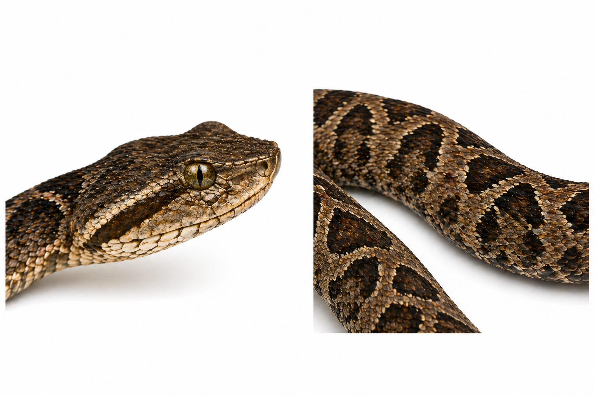

Pergunta 7
A serpente apresenta cabeça triangular e manchas escuras ao longo do corpo?
Leia atentamente a pergunta e observe as características descritas para responder.

A serpente apresenta cabeça triangular e manchas escuras ao longo do corpo?